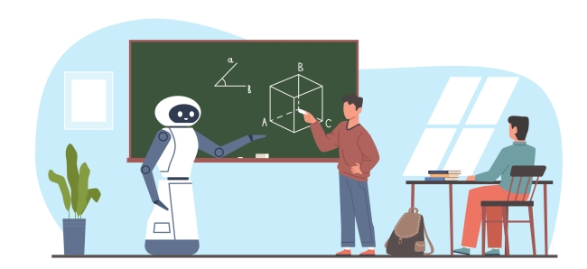
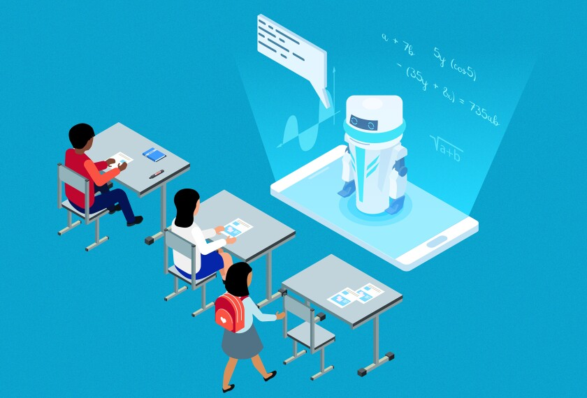

Artificial Intelligence (AI) is becoming a *super tool* 🛠️ for students everywhere! Whether you're cramming for a test, organizing your homework, or learning a tough subject — AI can help you study smarter, not harder 💡.
AI can now help explain hard math concepts 📐, correct your grammar ✍️, and even quiz you before exams! Students who use AI tools like ChatGPT or grammar assistants have been shown to boost their grades 📈 and learn faster ⏩.
Examples of how AI helps:
- 📝 Helps write essays with structure and clarity
- 🧠 Explains topics in simple language
- ⏱️ Saves time by summarizing chapters
- 📊 Provides feedback on assignments
Even in classrooms, AI tutors and assistants are popping up to answer questions in real-time, making learning *way more fun and interactive* 🎮✨.
AI is not here to replace teachers — it's here to *boost learning* and make students more confident in what they know. As AI keeps improving, school might just get a little easier (and cooler 😎)!